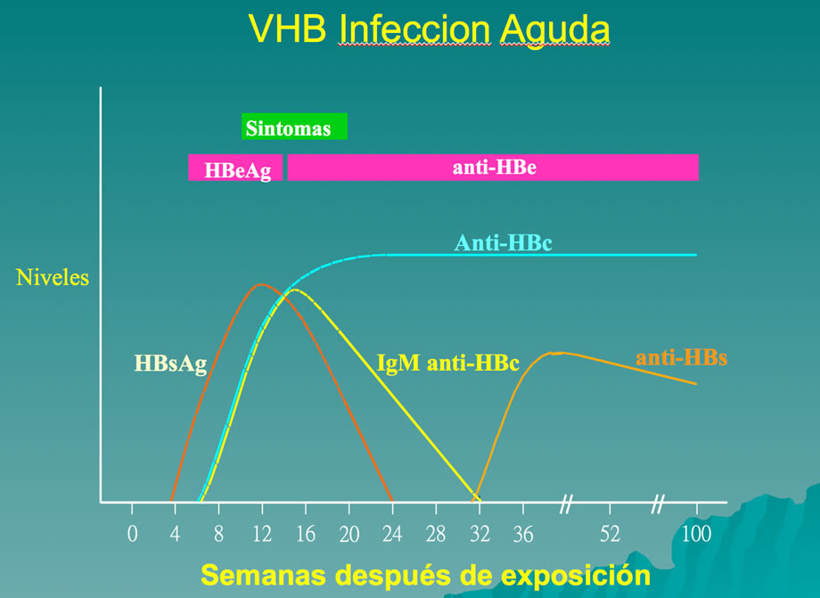
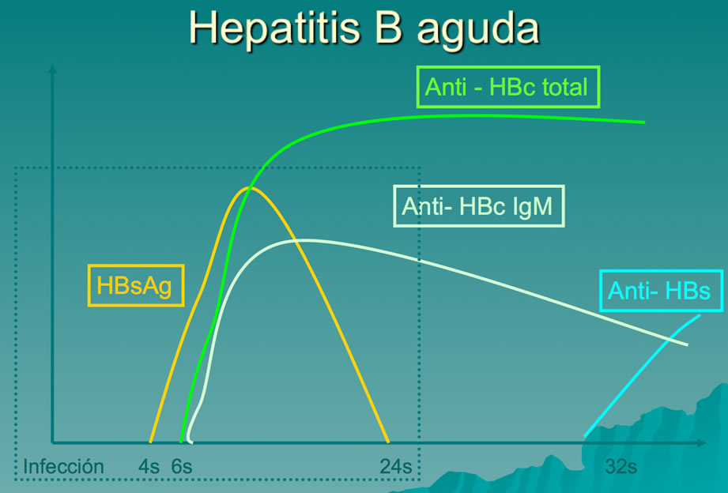

<div class="pages">
	<div data-page="projects" class="page no-toolbar no-navbar">
		<div class="page-content">
			<div class="navbarpages">
				<div class="nav_left_logo"><a href="index.html"></a></div>
				<div class="nav_right_button"><a href="menu.html"></a><a href="#" class="back" data-force="true"></a></div>
			</div>
			<div id="pages_maincontent">
				<h2 class="page_title">Aspectos de interés en infecciones e inmunizaciones</h2>
				<div class="page_content">
					<blockquote>Hepatitis</blockquote>
					<p>La hepatitis vírica aguda es una infección generalizada que afecta sobre todo el hígado. Todos los virus de las hepatitis humanas son virus RNA, excepto el de la hepatitis B, que es un virus DNA. Aunque se diferencian por sus propiedades antigénicas y moleculares, desde el punto de vista clínico todos los virus de la hepatitis producen enfermedades similares. Éstas oscilan, por una parte, entre la enfermedad asintomática que pasa inadvertida y la infección aguda fulminante y fatal en todos los tipos, y por otra, entre las infecciones persistentes subclínicas y la hepatopatía crónica rápidamente progresiva, con cirrosis e incluso hepatocarcinoma, en el caso de los tipos transmitidos por vía hematológica (VHB, VHC, VHD).</p>
					<h3>Etiologia</h3>
					<p>Tipos de virus que pueden causar hepatitis: A-B-C-D-E-G-TT</p>
					<ul>
						<li>Se transmiten por vía parenteral</li>
						<li>Son llamados hepatotropos por que la infección compromete fundamentalmente al hígado</li>
						<li>Otros virus pueden producir hepatitis, lo hacen de manera menos frecuente y no influye de manera general en ese enfermo:
							<ul>
								<li>CMV (citomegalovirus)</li>
								<li>EBV Virus Epstein Barr, el virus de la mononucleosis infecciosa que da un cuadro diferente pero suele comprometer el hígado.</li>
								<li>HSV, Virus del Herpes simple</li>
								<li>Fiebre amarilla</li>
								<li>Adenovirus</li>
								<li>Enterovirus</li>
							</ul>
						</li>
						<li>La mayoría de los casos son asintomáticos o subclínicos (aparecen por la ictericia)</li>
						<li>A mayor edad, el cuadro es más sintomático.</li>
						<li>Por ejemplo, el virus A era hasta hace unos años mucho más propio de niños y pre-escolares, ahora es más frecuente en jóvenes (por la transición epidemiológica). Pero esto tiene un lado bueno (menos contacto) y uno malo: cuando se infecta a mayor edad, el cuadro es más sintomático; en cambio, cuando se infecta a una edad más precoz pasa casi inaparente.
							<ul>
								<li>La clínica es semejante</li>
							</ul>
						</li>
						<li>El signo central es la ictericia</li>
					</ul>
					<h3>Formas de evolución</h3>
					<h4>Subclínica o anictérica</h4>
					<p>Es la forma más frecuente</p>
					<h4>Clásica</h4>
					<ul>
						<li>Pródromos:
							<ul>
								<li>Horas o días antes de la ictericia</li>
								<li>Conjunto de síntomas generales: decaimiento, astenia, anorexia, fiebre, malestar abdominal alto que ocasionalmente es intenso indican enfermedad sistémica</li>
							</ul>
						</li>
						<li>Estos síntomas se estabilizan y después de 1 a 2 semanas desaparecen</li>
						<li>La ictericia persiste :1 a 2 meses (promedio)</li>
					</ul>
					<h4>Prolongada</h4>
					<p>Duración mayor a 2 a 3 meses</p>
					<h4>Bifásica</h4>
					<p>10% en hepatitis A</p>
					<h4>Colestásica</h4>
					<p>Benigna pero más prolongada</p>
					<h4>Fultmonante</h4>
					<p>alta mortalidad, derivar paciente</p>
					<h4>Crónica</h4>
					<p>duración mayor a 6 meses</p>
					<h3>Diagnóstico</h3>
					<p>Está dado por: Síntomas + Laboratorio.</p>
					<h4>De Hepatitis aguda</h4>
					<ul>
						<li>Aumento de transaminasas más de 10 veces el valor normal</li>
						<li>Fosfatasas alcalinas levemente elevadas (3 veces el valor normal)</li>
					</ul>
					<h4>Específico</h4>
					<ul>
						<li>A: Anti HAV IgM</li>
						<li>B: HBsAg (Ag de superficie, corresponde a la cubierta del virus), los portadores crónicos lo tienen. AntiHBcIgM (anti core de clase IgM Ac contra la parte central del virus), es el marcador real.</li>
						<li>C: Anti HCV (anticuerpo contra virus C, se hace en todos los bancos de sangre de Chile) HCV PCR (para  C detectar el ARN viral</li>
						<li>D: AntiHDV IgM (virus saprofito del B)</li>
						<li>E: Anti HEV IgM (poco frecuente, en laboratorios de referencia)</li>
					</ul>
					<h4>Hepatitis A</h4>
					<ul>
						<li><strong>Diagnóstico:</strong> Anti HAV IgM </li>
						<li><strong>Mecanismo transmisión:</strong> Vía fecal-oral Forma Directa: brotes (niños) Indirecta: contaminación de aguas o alimentos </li>
						<li><strong>Periodo incubación:</strong> 2 a 6 semanas </li>
						<li><strong>Profilaxis:</strong> Gamaglobulina corriente (0.02 cc /kg): son Anticuperos contra el virus A, de clase IgG. Vacuna inactivada (2-3 dosis) es muy efectiva  inmunógena, protectora y sin RAM. Inmunidad por varios años, alto costo. Se pueden asociar</li>
						<li><strong>Tratamiento:</strong> Ambulatorio. Control clínico  y de laboratorio  cada 15 a 30 días </li>
						<li><strong>Portadores crónicos:</strong> (-) </li>
					</ul>
					<h4>Hepatitis B</h4>
					<ul>
						<li><strong>Diagnóstico:</strong> HBsAg (Ag de superficie, cubierta del virus), pte en portadores AntiHBcIgM (anti core de clase IgM : Ac contra la parte central)</li>
						<li><strong>Mecanismo transmisión:</strong> Transmisión sexual (30 a 40%) Parenteral: Transfusión y drogadicción EV. Transmisión de madre portadora a hijo </li>
						<li><strong>Periodo incubación:</strong> 6 semanas a 6 meses </li>
						<li><strong>Profilaxis:</strong> Gamaglobulina hiperinmune B: alto costo. Vacuna recombinante B (3 dosis): Es el antígeno de superficie, extremadamente eficiente </li>
						<li><strong>Tratamiento:</strong> Para dar de alta  bilirrubina y transaminasas normales  y HBsAg(-) desde los 3 a 6 meses</li>
						<li><strong>Portadores crónicos:</strong> Adulto: 1 – 10%, Niños: 20%, Recién Nacidos: 90 - 95%</li>
						<li><strong>Relación con hepatocarcinoma:</strong> 20 A 87%.</li>
					</ul>
					<h4>Hepatitis C</h4>
					<ul>
						<li><strong>Diagnóstico:</strong> Anti HCV HCV PCR. para detectar el ARN viral </li>
						<li><strong>Mecanismo transmisión:</strong> Vía parenteral (mecanismo más eficiente representa el 40%) y 40% causa desconocida, accidente con aguja menos 1% </li>
						<li><strong>Periodo incubación:</strong> 15 días a 4-5 meses </li>
						<li><strong>Profilaxis:</strong> No hay vacuna ni gama-globulina, porque el Virus muta mucho.</li>
						<li><strong>Portadores crónicos:</strong> 70-80 % </li>
						<li><strong>Relación con hepatocarcinoma:</strong> Desarrollan hepatoma (19%) </li>
					</ul>
					<h4>Hepatitis E</h4>
					<ul>
						<li><strong>Diagnóstico:</strong> Anticuerpos anti HVE IgG e IgM </li>
						<li><strong>Mecanismo transmisión:</strong> Vía fecal oral </li>
						<li><strong>Periodo incubación:</strong> 2 a 9 semanas (aprox 45 días) </li>
						<li><strong>Profilaxis:</strong> Vacuna no está disponible aún. </li>
						<li><strong>Portadores crónicos:</strong> (-) </li>
					</ul>
					<h3>VIRUS DE LA HEPATITIS B </h3>
					<p>El virus B tiene una parte central y una cubierta que se llama “Partícula de Dane” que corresponde a la proteína de superficie del virus (se usó en la primera vacuna). Este virus se adhiere a la célula hepática y queda sólo la parte central “el core”, en el cual se ven 2 cadenas de DNA; el DNA ingresa al núcleo y da origen al cccDNA (cerrado y circular), el que transcribe y el RNA comienza a sintetizar proteínas. Este cccDNA hace que el virus B no desaparezca y se den infecciones crónicas.</p>
					<p>Cerca de 2.000.000.000 personas alrededor del mundo presentan infección por el virus de la hepatitis B (VHB) y de estos 350 millones desarrollan enfermedad crónica por este virus.</p>
					<p>Aproximadamente entre el 90-97,5% de las infecciones agudas por el VHB tienen una resolución espontanea, sin embargo el 1% se manifiestan con hepatitis fulminante.</p>
					<p>La enfermedad por el virus de la hepatitis B presenta una secuencia de 4 fases:</p>
					<ul>
						<li>Fase de inmunotolerancia</li>
						<li>Fase de aclaramiento inmunológico</li>
						<li>Fase de control inmunológico</li>
						<li>Fase de reactivación de la infección</li>
					</ul>
					<h4>EVOLUCIÓN DE LA INFECCIÓN POR VIRUS B:</h4>
					<ul>
						<li>Hepatitis aguda por virus B (25%)</li>
						<li>Muerte (1%)</li>
						<li>Recuperación (99%)</li>
						<li>Infección transitoria subclínica (65%)</li>
						<li>Recuperación (100%)</li>
						<li>Hepatitis B crónica (10%)</li>
						<li>Carcinoma Hepatocelular
							<ul>
								<li>Cirrosis (10 – 30%)</li>
								<li>Portador (70 – 90%)</li>
							</ul>
						</li>
					</ul>
					<p>(*) Los países con alta tasa de portación, tienen a su vez una alta tasa de carcinoma hepatocelular, el que es más frecuente en población joven (20 – 30 años) pues adquieren la infección desde niños. </p>
					<h4>EVOLUCIÓN NATURAL:</h4>
					<p>En un primer momento se adquiere la infección<br>
						- Pasa un período de semanas hasta 6 meses y luego aparece la enfermedad, los síntomas, se elevan las transaminasas, poco después aparece el antígeno de superficie.<br>
						Se es contagiante desde antes de enfermar.<br>
						Después viene un periodo de mejora clinica. El anticore IgM es el mejor marcador de infección aguda. En este periodo también sirve el antígeno HBe, que está en la parte central del virus y es indicador de replicación viral, este igual desaparece para luego aparecer el anticuerpo antiHBe.<br>
						Una vez que desaparece el antígeno de superficie, pasa un tiempo y aparece el anticuerpo de superficie, esto indica que hubo contacto con el virus y que por tanto se es inmune. Es lo mismo que se consigue con la vacuna, al inyectar el antígeno de superficie se induce la aparición del anticuerpo de superficie y por tanto el desarrollo de inmunidad.</p>
					<h4>Recomendaciones con respecto a la transmisión:</h4>
					<p>En caso de virus B positivo (portador adulto):</p>
					<ul>
						<li>Vacunación de contactos sexuales de los portadores.</li>
						<li>Uso de barreras de protección durante el acto sexual, si la pareja no está vacunada o es naturalmente inmune.</li>
						<li>No compartir cepillo de dientes o afeitadora.</li>
						<li>Cubrir bien las heridas</li>
						<li>Limpiar la sangre derramada con detergente</li>
						<li>No donar sangre, órganos o espermios.</li>
					</ul>
					<p>Niños o adultos con virus B positivo:</p>
					<ul>
						<li>Pueden participar de actividades deportivas de contacto.</li>
						<li>No deben ser excluidos de la participación en el colegio, ni ser aislados por otros niños</li>
						<li>Pueden compartir comida, utensilios y besar a otros.</li>
					</ul>
					<p>Relación del hepatocarcinoma y virus B: Es variable entre los países, es alrededor de 20 y 87%.</p>
					<p>Actualmente el manejo para la infección crónica por el virus de la hepatitis B se recomienda a pacientes que tienen &gt; 2000 UI/mL de copias de DNA viral, transaminasas séricas superiores al límite normal y evidencia de actividad necroinflamatoria severa o fibrosis moderada a nivel hepático.<br>
					</p>
					<h3>Conducta en enfermedades reumáticas</h3>
					<p>Hasta la fecha  no existe literatura en relación a como se debe afrontar el caso de pacientes con enfermedades reumatológicas e infección aguda por VHB, sin embargo se pueden considerar dos escenarios; mantener una vigilancia expectante para determinar si el paciente realiza un resolución de la infección o presenta una infección crónica. Por el otro lado dar un manejo antiviral y posterior en el seguimiento considerar manejo con algún FARME. Esto realizado de manera conjunta con el apoyo de especialistas en infectología, gastroenterología o hepatología.</p>
					<p>Especial interés se ha dedicado a la reactivación de la infección del  VHB, con la detección no solo de casos con antígeno de superficie positivo sino que también se ha ampliado la búsqueda de hepatitis B oculta.</p>
					<p>La reactivación se define como la combinación de dos hallazgos: el incremento de los niveles de DNA viral en más de &gt; 1 Log10 UI/mL o la detección de DNA viral en un caso con resultado indetectable previo; y la elevación de los niveles de ALT 1.5 - 2 veces el limites superior.</p>
					<p>Los principales factores de riesgo son el estado serológico y los niveles de DNA viral; los portadores de HBsAg y con carga viral de DNA VHB detectable están en mayor riesgo. Mientras el riesgo disminuye con anticuerpos anti HBc y anti HBs. Otros factores descritos son edad, género masculino y tipo de medicamento inmunosupresor.</p>
					<p>se ha identificado que los corticoesteroides tienen un efecto además de afectar la función de los linfocitos T, tienen el potencial de incrementar la replicación viral por su relación con factores de transcripción. Siendo más marcado el efecto de la corticoterapia oral en comparación a la inhalada, mientras las dosis bajas, por cortos periodos de tiempo, o administradas de forma intraarticular o tópica no han sido asociadas con reactivación. Respecto a los Fármacos Antirreumáticos Modificadores de la Enfermedad (FARME) tradicionales como azatioprina metrotexate, leflunomida, cloroquina, sulfasalazina y 6 mercaptopurina son de los medicamentos con el potencial más bajo para inducir reactivación con reportes aislados.</p>
					<h4>Marcadores serológicos en hepatitis b</h4>
					<p><strong>HBsAg</strong>: Antígeno de Superficie<br>
						<strong>Anti-HBs</strong>: Anticuerpo anti-HBs<br>
						<strong>Anti-HBc (total)</strong>: Anticuerpo anti-core total<br>
						<strong>Anti-HBc (IgM)</strong>: Anticuerpo anti-core de clase IgM<br>
						<strong>HbeAg:</strong> Antígeno e<br>
						<strong>Anti-HBeAg</strong>: Anticuerpo anti-e</p>
					<h4>Evolucion de los marcadores</h4>
					<ul>
						<li>Los Anti-HBc desde las fases iniciales continúan un período muy prolongado (indefinido). INMUNIDAD.</li>
						<li>Los Anti-HBe siguen una curva descendente y desaparecen antes que  el Ac “Australia” y Anti-HBc.</li>
					</ul>
					<p><a rel="gallery-1" href="images/photos/hepatitis1.jpg" title="VHB Infección Aguda" class="swipebox"></a> <a rel="gallery-1" href="images/photos/hepatitis2.jpg" title="Hepatitis B Aguda" class="swipebox"></a></p>
					<table border="1" cellspacing="0" cellpadding="0" width="100%">
						<tr>
							<td valign="bottom"><p>Marcador </p></td>
							<td width="16%"><p align="center">Aguda </p></td>
							<td width="16%"><p align="center">Crónica<br>
									inactiva</p></td>
							<td width="16%"><p align="center">Crónica<br>
									HBeAg+</p></td>
							<td width="16%"><p align="center">Crónica<br>
									HBeAg-</p></td>
							<td width="16%"><p align="center">Resuelta</p></td>
						</tr>
						<tr>
							<td valign="bottom"><p>HBsAg </p></td>
							<td><p align="center">+/- </p></td>
							<td><p align="center">+ </p></td>
							<td><p align="center">+ </p></td>
							<td><p align="center">+ </p></td>
							<td><p align="center">- </p></td>
						</tr>
						<tr>
							<td  valign="bottom"><p>HBeAg </p></td>
							<td><p align="center">+ </p></td>
							<td><p align="center">- </p></td>
							<td><p align="center">+ </p></td>
							<td><p align="center">- </p></td>
							<td><p align="center">- </p></td>
						</tr>
						<tr>
							<td valign="bottom"><p>Anti HBe </p></td>
							<td><p align="center">- </p></td>
							<td><p align="center">+ </p></td>
							<td><p align="center">- </p></td>
							<td><p align="center">+/- </p></td>
							<td><p align="center">+/- </p></td>
						</tr>
						<tr>
							<td valign="bottom"><p>Anti HBs </p></td>
							<td><p align="center">- </p></td>
							<td><p align="center">+ </p></td>
							<td><p align="center">- </p></td>
							<td><p align="center">+/- </p></td>
							<td><p align="center">+/- </p></td>
						</tr>
						<tr>
							<td valign="bottom"><p>Anti HBc </p></td>
							<td><p align="center">IgM + </p></td>
							<td><p align="center">+ </p></td>
							<td><p align="center">+/- </p></td>
							<td><p align="center">+ </p></td>
							<td><p align="center">+/- </p></td>
						</tr>
						<tr>
							<td valign="bottom"><p>ALT </p></td>
							<td><p align="center">+ </p></td>
							<td><p align="center">- </p></td>
							<td><p align="center">+/- </p></td>
							<td><p align="center">+ </p></td>
							<td><p align="center">- </p></td>
						</tr>
						<tr>
							<td><p>HVB<br>
									DNA </p></td>
							<td><p align="center">indetect<br>
									&lt;2000 UI/mL </p></td>
							<td><p align="center">indetect<br>
									&lt;2000 UI/mL </p></td>
							<td><p align="center">Persist<br>
									/intermit<br>
									(&gt;2000 UI/mL) </p></td>
							<td><p align="center">Persist<br>
									/intermit<br>
									(&gt;2000 UI/mL) </p></td>
							<td><p align="center">Detect<br>
									o indetect</p></td>
						</tr>
						<tr>
							<td valign="bottom"><p>Lesión hepática </p></td>
							<td><p align="center">+/- </p></td>
							<td><p align="center">+/- </p></td>
							<td><p align="center">moderada<br>
									severa </p></td>
							<td><p align="center">mínima a severa </p></td>
							<td><p align="center">- </p></td>
						</tr>
					</table>
					<p><em>Modificado Nard FD, et al. Risk of hepatitis B virus reactivation in rheumatoid arthritis patients undergoing biologic treatment: Extending perspective from old to newer drugs. World J Hepatol. 2015;7(3):344-61. Puri P. Acute exacerbation of chronic hepatitis B: the dilemma of differentiation from acute viral hepatitis B. J Clin Exp Hepatol. 2013;3(4):301-12.</em></p>
					<h4>Efectos y seguridad de medicamentos biológicos y no biológicos  en reactivación  de hepatitis b </h4>
					<p>Debido a la inmunosuopresión la capacidade de  respuesta del sistema inmune se espera depletada  y por tanto la capacidad de presentación antigénico del VHB por lo tanto cuando se suspende la medicación  se induce la respuesta citotóxica que puede  hacer compromiso severo hepático.</p>
					<p>En pacientes con  infección crónica (HBsAg+) <br>
						Se ha descrito una  tasa de reactivación en el 38% de los  casos incluyendo pacientes en manejo con Infliximab, Etanercept y Adalimumab.  De forma interesante en estudios adicionales se ha identificado que el uso de  análogos nucleósidos puede  prevenir hasta &gt; 90% la reactivación. El riesgo poder ser menor con Etanercept,  mientras Infliximab parece estar en mayor relación con reactivación viral.</p>
					<p><strong><em>Pacientes con infección &ldquo;resuelta&rdquo; </em></strong><strong><em>(HBsAg - / anti HBc +)´</em></strong></p>
					<p>En análisis de pacientes con  infección &ldquo;resuelta&rdquo; o denominada también como &ldquo;infección oculta&rdquo; no se ha  observado reactivación en pacientes con perfil serológico de anti HBc + y anti  HBs +. Por lo que se considera que el riesgo es estos pacientes es realmente  bajo, sin embargo en la probabilidad de la reactivación se eleva si existe una  carga viral alta o si se presenta anti HBs ( -), en este escenario una revisión  sistemática realizada por Lee et al. Se encontró una tasa de reactivación del 1,7%. </p>
					<p>De forma adicional los  pacientes que presentan hepatitis crónica pueden presentar un fenómeno  denominado aclaramiento espontaneo que consiste en la perdida espontanea de  HBsAg a una tasa de 0,5% anual, pero el DNA viral continua permaneciendo a  nivel intrahepático.</p>
					<p><strong><em>En pacientes vacunados</em></strong><br>
						En un estudio prospectivo se  evidencio una posible disminución de los títulos de anti HBs en pacientes  tratados con anti TNF, aunque este efecto también se ha observado con el uso de  metrotexate y no implica una disminución significativa del efecto protector.</p>
					<p>&nbsp;</p>
					<table border="1" cellspacing="0" cellpadding="0" width="100%">
						<tr>
							<td width="60%"><strong>Medicamento</strong></td>
							<td width="20%"><strong>Riesgo estimado reactivación en paciente HBAgS +</strong></td>
							<td width="20%"><strong>Riesgo estimado para reactivación en paciente HBAgS - anti HBc + </strong></td>
						</tr>
						<tr>
							<td valign="bottom"><p>Rituximab (anti-CD20) </p></td>
							<td valign="bottom"><p>Alto (30-60%) </p></td>
							<td valign="bottom"><p>Alto (&gt;10%) </p></td>
						</tr>
						<tr>
							<td valign="bottom"><p>Infliximab    (anti-TNF) </p></td>
							<td valign="bottom"><p>Moderado    (1-10%) </p></td>
							<td valign="bottom"><p>Moderado (1%) </p></td>
						</tr>
						<tr>
							<td valign="bottom"><p>Etanercept    (anti-TNF) </p></td>
							<td valign="bottom"><p>Moderado    (1-10%) </p></td>
							<td valign="bottom"><p>Moderado (1%) </p></td>
						</tr>
						<tr>
							<td valign="bottom"><p>Adalimumab    (anti-TNF) </p></td>
							<td valign="bottom"><p>Moderado    (1-10%) </p></td>
							<td valign="bottom"><p>Moderado (1%) </p></td>
						</tr>
						<tr>
							<td valign="bottom"><p>Abatacept (anti    CD80, CD86) </p></td>
							<td valign="bottom"><p>Moderado    (1-10%) </p></td>
							<td valign="bottom"><p>Moderado (1%) </p></td>
						</tr>
						<tr>
							<td valign="bottom"><p>Dosis alta prednisona &gt;= 20 mg por &gt;= 4 semanas </p></td>
							<td valign="bottom"><p>Alto (&gt;10%) </p></td>
							<td valign="bottom"><p>Sin dato </p></td>
						</tr>
						<tr>
							<td valign="bottom"><p>Dosis moderada    prednisona &lt;20 mg por &gt;= 4 semanas </p></td>
							<td valign="bottom"><p>Moderado (1-10%) </p></td>
							<td valign="bottom"><p>Moderado (1-10%) </p></td>
						</tr>
						<tr>
							<td valign="bottom"><p>Dosis baja prednisona &lt; 1 semana </p></td>
							<td valign="bottom"><p>Bajo (&lt;1%) </p></td>
							<td valign="bottom"><p>Bajo (&lt;1%) </p></td>
						</tr>
						<tr>
							<td valign="bottom"><p>Corticoesteroides    intraarticulares </p></td>
							<td valign="bottom"><p>Bajo (&lt;1%) </p></td>
							<td valign="bottom"><p>Bajo (&lt;1%) </p></td>
						</tr>
						<tr>
							<td valign="bottom"><p>Azatioprina </p></td>
							<td valign="bottom"><p>Bajo (&lt;1%) </p></td>
							<td valign="bottom"><p>Bajo (&lt;1%) </p></td>
						</tr>
						<tr>
							<td valign="bottom"><p>6-mercaptopurina </p></td>
							<td valign="bottom"><p>Bajo (&lt;1%) </p></td>
							<td valign="bottom"><p>Bajo (&lt;1%) </p></td>
						</tr>
						<tr>
							<td valign="bottom"><p>Metrotexate </p></td>
							<td valign="bottom"><p>Bajo (&lt;1%) </p></td>
							<td valign="bottom"><p>Bajo (&lt;1%) </p></td>
						</tr>
					</table>
					<p><em>Pattullo V.  Hepatitis B reactivation in the setting of chemotherapy and immunosuppression -  prevention is better than cure. World J Hepatol. 2015;7(7):954-67.</em></p>
					<h4>¿Cuáles son las recomendaciones de tamizaje en el inmunosuprimido?</h4>
					<p>Todos  los pacientes al momento de iniciar terapia con FARMEs biológicos deben ser  evaluados con HBsAg anti HBc y anti HBs, y en caso de resultar alguno positivo  realizar carga de DNA viral y pruebas de función hepática. Algunos autores  consideran desde el momento mismo del diagnóstico.</p>
					<blockquote>Hepatitis C</blockquote>
					<p>Es un virus RNA de una sola hebra, de tamaño más grande que el virus B.<br>
						El genoma del virus C consiste en 2 regiones, una que codifica para proteínas estructurales (el core del virus) y otra que codifica para proteínas no estructurales (permiten la replicación del virus).<br>
						Se transmite de forma parecida al virus B, siendo básicamente parenteral.<br>
						El cuadro se presenta en la mayoría de los casos como infección crónica (70 – 80%), a diferencia del virus A en que casi nunca la infección comienza como crónica y, del virus B en que excepcionalmente se inicia como un cuadro crónico.</p>
					<ul>
						<li>La infección por el virus de la hepatitis C  (VHC) tiene distribución mundial y se asociada con cirrosis y con carcinoma hepatocelular. Cerca de 170 millones de personas, un 3% de la población mundial tiene infección crónica por este virus.</li>
						<li>De forma única la infección por VHC es capaz de generar manifestaciones reumatológicas extrahepáticas; artritis, vasculitis crioglobulinémica y sialoadenitis</li>
						<li>Su período de incubación va de 15 días a 4 -5 meses.</li>
					</ul>
					<p>A diferencia de las otras hepatitis virales, esta es generalmente asintomática.<br>
						Para que los anticuerpos antiHVC se hagan positivos, se requiere un período de ventana que dura algunos meses.</p>
					<h3>Epidemiologia</h3>
					<p>Al menos 1-2% de la población mundial está infectada.<br>
						Entre el 50-80% de las infecciones agudas van a la cronicidad.<br>
						La mayoría de estos tienen evidencia bioquímica e histológica de enfermedad hepática crónica.<br>
						Al menos 20% de los pacientes con infección crónica evolucionan a cirrosis (50% a largo plazo)<br>
						Hay progresión histológica (42% cirrosis en 8 años)<br>
						Se puede desarrollar hepatoma (19%) <br>
						En Japón los cirróticos alcohólicos hacen en 10 años de evolución un 20% de hepatomas.<br>
						Si se tiene hepatitis crónica C el riesgo de hepatoma aumenta a un 57% <br>
						La asociación de alcohol y hepatitis C aumenta el riesgo en un 81%.<br>
					</p>
					<h3>Diagnostico</h3>
					<p>Anticuerpo anti virus C<br>
						1a generación  Antígeno C100 – 3 (NS3)<br>
						2a generación  Antígeno C100 – 3 + C33c (C200)<br>
						RNA viral: se detecta por PCR </p>
					<h3>¿En quiénes se debería testear este virus?</h3>
					<ul>
						<li>Drogadictos EV</li>
						<li>Pacientes con VIH</li>
						<li>Pacientes con hemofilia y con transfusión sanguínea antes de los</li>
						<li>Personas en hemodiálisis</li>
						<li>Personas con transaminasas elevadas</li>
						<li>Transfusiones o transplantes de órganos.(el riesgo de transmisión sexual es bajo, pero existe).</li>
					</ul>
					<h3>Conducta en enfermedades reumáticas</h3>
					<p>El tamizaje para la infección por VHC inicialmente se recomendaba para pacientes previo al inicio de metrotexate o leflunomida actualmente se recomienda para todo paciente que adicionalmente vaya a recibir terapia con FARMEs biológicos. Consiste básicamente en la medición de anticuerpos anti VHC y de resultar positivos se debe realizar una medición de la carga viral de RNA de VHC.</p>
					<p>En caso de evidenciarse la presencia de infección crónica el paciente debe ser remitido a un hepatólogo o gastroenterólogo para realizar una estatificación del estado del compromiso hepático y determinar la presencia de fibrosis o cirrosis.</p>
					<p>El uso de metrotexate y leflunomida está contraindicado en el grupo de FARMEs tradicionales, de forma adicional no existe un consenso definitivo respecto a los FARMEs biológicos pero se podrían considerar en casos de enfermedad hepática en estadios tempranos.</p>
					<p> Rituximab ha sido relacionado con incrementos en el RNA viral en pacientes con linfoma recibiendo quimioterapia combinada. Por esta razón se realizó un análisis retrospectivo de paciente con AR e infección crónica por VHC recibiendo anti TNF y anti CD20 evidenciándose que en paciente en manejo con Rituximab presentaron elevación de la carga viral a diferencia de los pacientes con anti TNF</p>
					<p> Existe un reporte de dos pacientes con presencia de infección crónica por VHC y debido al difícil control de la actividad de su AR se consideró el inicio de Abatacept con adecuados resultados adecuados sin compromiso de la función hepática, aunque uno de los paciente debió regresar a un anti TNF debido a que en el mes 14 se identificó disminución en la respuesta al tratamiento.</p>
					<p>Una serie de estudios observacionales en relación al virus de la hepatitis C y RA  han mostrado que no se pre presenta un incremento en la elevación de pruebas hepáticas o carga viral asociado al uso de anti TNF. Incluso un estudio del uso conjunto de Etanercept junto a terapia antiviral se relacionó con mejoría en las enzimas hepáticas, la carga viral y síntomas. Con resultados similares evidenciados en pacientes con artropatía psoriásica</p>
					<h3>Lecturas recomendadas</h3>
					<ol class="simple_list">
						<li>Pattullo V. Hepatitis B reactivation in the setting of chemotherapy and  immunosuppression - prevention is better than cure. World J Hepatol.  2015;7(7):954-67.</li>
						<li>Nard FD, et al. Risk of hepatitis B virus reactivation  in rheumatoid arthritis patients undergoing biologic treatment: Extending  perspective from old to newer drugs. World J Hepatol. 2015;7(3):344-61. </li>
						<li>Felis-Giemza A, et al. Treatment of rheumatic diseases and hepatitis B virus  coinfection. Rheumatol Int. 2015;35(3):385-92.</li>
						<li>Bruno R, et al. Recommendations for the management of acute hepatitis B: position  paper of the Italian Society for the Study of Infectious and Tropical Diseases (SIMIT). Infection. 2014;42(5):811-5. </li>
						<li>Shiffman ML. Management of acute hepatitis B. Clin Liver Dis. 2010;14(1):75-91; viii-ix. </li>
						<li>López-Serrano P, et al. Hepatitis B and immunosuppressive therapies for  chronic inflammatory diseases: When and how to apply prophylaxis, with a special focus on corticosteroid therapy. World J Hepatol. 2015;7(3):539-47. </li>
						<li>Felis-Giemza A, et al. Treatment of rheumatic diseases and hepatitis B virus  coinfection. Rheumatol  Int. 2015;35(3):385-92. </li>
						<li>Caso  F, et al. Current evidence in the field of the management with TNF-α inhibitors  in psoriatic arthritis and concomitant hepatitis C virus infection. Expert Opin  Biol Ther. 2015;15(5):641-50. </li>
					</ol>
					<ul class="features_list">
						<li><a href="cont_tuberculosis.html"><span>Ant - Tuberculosis</span></a></li>
						<li><a href="cont_inmunizaciones.html"><span>Sig - Inmunizaciones</span></a></li>
					</ul>
					<a href="menu.html" class="button_full">Menú principal</a> </div>
			</div>
		</div>
	</div>
</div>
